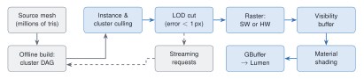
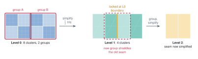
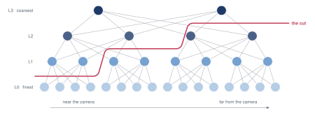
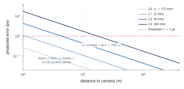
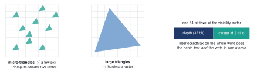
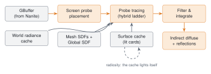
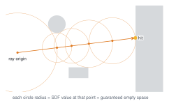
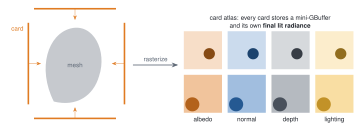
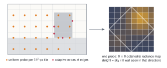
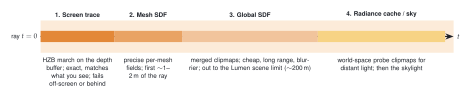

Part I · Nanite
1Nanite: the problem
A traditional engine draws a mesh with a hardware draw call, picking one of a handful of artist-authored levels of detail (LODs) for the whole object. That design has three failure modes once source assets reach film density (millions of triangles per rock, thousands of rocks):
Whole-object LOD is too coarse. A cliff that is 2 m from the camera at its base and 400 m away at its top needs very different detail at each end.
Small triangles are wasteful in hardware. GPUs rasterize in pixel quads; a triangle covering one pixel still pays for four, and the fixed-function setup rate becomes the bottleneck long before pixel shading does.
Memory. Film-quality assets do not fit in VRAM all at once.

2Building the cluster DAG (offline)
Clusters
The source mesh is partitioned into clusters of up to 128 triangles each, using a graph partitioner (METIS) on the triangle adjacency graph so that clusters are spatially compact and share few boundary edges. A cluster is Nanite’s atom: it is culled, LOD-selected, streamed and rasterized as a unit. 128 triangles is small enough for fine-grained culling and large enough to amortize per-cluster work and to map well onto GPU workgroups.
Group, simplify, split
The naive way to get LODs per cluster would be to simplify each cluster independently. That fails immediately: two neighboring clusters at different LODs no longer share an edge, so cracks open between them. Locking cluster boundaries during simplification avoids cracks but then those boundary edges can never be simplified, and after a few levels the mesh is all boundary.
Nanite’s answer is the core trick of the whole system:
Group neighboring clusters (typically 8–32, roughly 4 is the conceptual minimum) into a cluster group, again with a graph partitioner that minimizes shared edges.
Merge each group’s triangles and simplify the merged patch to half its triangle count with quadric error metrics, locking only the group’s outer boundary. Interior edges between the old clusters vanish.
Split the simplified patch back into new 128-triangle clusters.
Repeat on the new clusters. Because the next grouping is computed fresh, the boundaries that were locked at this level land in the interior of groups at the next level, and get simplified there.

Why the result is a DAG, not a tree
A level- cluster is made from the merged triangles of a whole group of level- clusters, so it has several “children”; and since the simplified group is re-split into several clusters, each level- cluster contributes to several parents. The hierarchy is therefore a directed acyclic graph. The important structural fact is that a group’s clusters and the clusters produced from that group cover exactly the same surface with exactly the same boundary. Swapping one set for the other is always watertight. LOD is decided per group, which is what lets neighboring regions sit at different detail without cracks.

3Choosing the cut: view-dependent LOD
Error metric
Every simplification step records a geometric error in object space (from the quadric error of the simplification). For a cluster , Nanite stores its own error and a bounding sphere, and also the error and bounds of the group it was simplified into, i.e. its parents, . At runtime the error is projected to the screen. For a sphere of center , distance from the eye, a vertical field of view and a viewport pixels tall, (The real implementation uses the closest point of the bounding sphere, and accounts for instance scale.)
The parallel selection rule
Walking a DAG top-down on a GPU is awkward. Nanite instead makes the decision for every cluster independently: “I am precise enough, and my parent is not.” This yields exactly one consistent cut provided that the projected error is monotonic along the DAG: a parent must always appear at least as erroneous as its children from any viewpoint. Nanite enforces this at build time by making each group’s stored error the max of its children’s errors and its bounding sphere enclose its children’s spheres. Then for any view there is precisely one level on every root-to-leaf path where the error crosses , all clusters of a group make the same decision about their shared parent, and the cut is watertight.

Hierarchical culling
Testing every cluster in the scene each frame would still be millions of tests. The cluster groups are placed in a bounding-volume hierarchy (a wide BVH, 4 to 8 children per node). Traversal discards a whole subtree if its bounds are outside the frustum, occluded, or if every cluster beneath it would already be too fine (the parent error at that node is below , so nothing beneath it can be the cut). Traversal runs as a single persistent compute dispatch with a global work queue, so it does not need one dispatch per tree level.
4Two-pass occlusion culling
Nanite culls against a hierarchical Z-buffer (HZB): a mip pyramid of the depth buffer where each texel stores the farthest depth beneath it. A cluster’s screen rectangle is tested against the mip level where it covers about texels; if its nearest depth is behind the stored farthest depth, it is hidden.
The difficulty is that the current frame’s depth does not exist until you have drawn the frame. Nanite resolves the chicken-and-egg with two passes:
- Input: HZBprev from last frame; the set Vprev of instances and clusters visible last frame
- Pass 1 guess: what was visible stays visible
- for each node in Vprev:
- if in the frustum and not occluded by HZBprev (reprojected): rasterize
- build HZBcur from the depth just rendered
- Pass 2 catch everything the guess got wrong
- for each node not drawn in pass 1:
- if in the frustum and not occluded by HZBcur: rasterize, mark visible
- rebuild HZBcur; store Vcur for next frame
The first pass gets most of the frame right cheaply because consecutive frames are coherent. The second pass guarantees correctness: anything newly disoccluded is tested against a depth buffer that is conservative for this frame (it contains only things that really are visible now), so nothing visible is ever culled. The cost is one extra HZB build and a second, usually tiny, traversal.
5Rasterization: software for tiny triangles
Why hardware is the wrong tool at one triangle per pixel
Fixed-function rasterizers are built for triangles covering tens to hundreds of pixels: setup cost is paid once per triangle, then many pixels are filled in quads. At one pixel per triangle, setup throughput and quad overshading dominate. Nanite measured its compute-shader rasterizer at roughly three times faster than the hardware path for micro-triangles.
The split
Each visible cluster is binned by the screen size of its triangles. Clusters of small triangles go to a software rasterizer in a compute shader (one thread per triangle, scanline or edge-function iteration over a tiny bounding box). Clusters with large triangles go to the hardware rasterizer, where it is still faster.

Visibility buffer, not GBuffer
Neither rasterizer shades anything. They write a visibility buffer: per pixel, a 64-bit word with depth in the high bits and (visible-cluster index, triangle index) in the low bits. Because depth occupies the most significant bits, a single 64-bit atomic max (with reversed-Z, nearer = larger) both depth-tests and writes the payload, which is how a compute shader can rasterize without fixed-function ROPs and without races.
Deferred materials
Shading happens afterwards, once per pixel. From the triangle id, a material pass fetches the three vertices, recomputes barycentrics and analytic derivatives for that pixel, interpolates attributes and runs the material shader, writing a standard GBuffer that the rest of the renderer (and Lumen) consumes. The original UE5 implementation drew one full-screen pass per material, using a material-ID depth test so each pass only touched its own pixels; later versions bin pixels by material and shade in compute. Two consequences: overdraw costs only a 64-bit atomic, never a material evaluation; and material count has a per-frame overhead that grows with the number of distinct materials visible.
6Streaming, compression and the long tail
Virtualized geometry
Like virtual texturing, Nanite keeps only what the current views need. Cluster groups are packed into fixed-size pages (128 KB). A small set of root pages (the coarsest levels) is always resident so any mesh can always draw something. During culling, whenever the cut wants a cluster whose data is not resident, the GPU writes a request; the CPU streams pages in priority order and the cut refines over the next few frames. The DAG structure guarantees that a coarser, resident ancestor can always stand in.
Compression
Positions are quantized to a per-mesh grid and stored with per-cluster bit widths relative to the cluster’s bounds; normals use octahedral encoding; indices are stored locally within the cluster’s vertex set. The in-memory format is decodable directly on the GPU, and the on-disk format adds a byte-oriented layout that general-purpose compressors (Oodle) shrink further. Published figures put a Nanite mesh at around 14 bytes per input triangle on disk, smaller than a typical non-Nanite mesh with its LOD chain.
Limits and later extensions
Aggregate geometry. Nanite simplifies surfaces. Grass, leaves and hair are many disconnected thin pieces; simplifying them erodes volume and they cannot be culled by self-occlusion. Foliage support arrived progressively (masked materials, programmable raster, and in 5.7 an experimental foliage path that adds instanced assemblies, skinned deformation and a voxel-like representation for distant canopies).
Deformation. Static meshes first; skeletal meshes, World Position Offset and displacement-based tessellation were added in 5.x releases.
Faceting at the cut. Because LOD switches per group, topology can change slightly as you move; at px this is generally invisible, but hard-edged detail like engraved text can shimmer.
Shadows. Nanite pairs with Virtual Shadow Maps (16k virtual shadow maps rendered through the same Nanite pipeline), since conventional shadow maps cannot resolve micro-geometry.
Part II · Lumen
7Lumen: the problem
Global illumination means solving the rendering equation, not just the direct term: The recursion inside is what makes light bounce. Offline renderers estimate the integral by Monte Carlo with hundreds of rays per pixel. A game at 1440p and 60 fps can afford perhaps one-half of a ray per pixel, against a world that is fully dynamic (no baked lightmaps) and made of Nanite geometry far too dense to put in a ray-tracing structure at full detail.

8Representing the scene for rays
Mesh distance fields
Each mesh gets a precomputed signed distance field (SDF): a sparse 3D grid where each texel stores the distance to the nearest surface (negative inside). Ray marching an SDF is sphere tracing: at the current point, the stored distance is a radius in which nothing can be hit, so the ray can safely jump that far. In open space the steps are huge; near surfaces they shrink. SDFs also give a nearly free soft-shadow and cone estimate, since the closest approach of a ray to geometry, , approximates how much of a cone around the ray is blocked.

Global distance field
Tracing dozens of overlapping mesh SDFs per ray gets expensive with distance. Lumen also merges all mesh SDFs into a global distance field: a set of camera-centered clipmaps (nested cubes of coarser resolution farther out), updated incrementally when objects move. It is cheaper and covers long range, but is low resolution and loses thin features. Lumen therefore uses precise mesh SDFs for the first couple of meters of a ray and switches to the global field beyond.
The surface cache
A distance-field hit tells you where the ray stopped, not what color the light is there. Evaluating full material shading and direct lighting at arbitrary hit points would be far too slow. Lumen’s answer is the surface cache:
Each mesh is covered by a handful of cards: oriented rectangles placed around it (conceptually like an orthographic camera looking at the mesh from up to six sides; complex meshes get more cards from a build-time placement pass).
Each card is rasterized (with Nanite, so it is cheap) into an atlas storing albedo, normal, emissive, opacity and depth. Card resolution follows distance to the camera and is updated on a per-frame budget.
Lighting is then computed in card space: direct lighting with shadows, plus indirect lighting gathered by tracing short rays from the card texels themselves.

Radiosity in the cache: infinite bounces for free
When the surface cache computes indirect lighting for its own texels, it traces rays that themselves hit the surface cache and read last frame’s lit result. One bounce per frame accumulates into multi-bounce light within a few frames, a fixed-point iteration of the rendering equation over time: where is the one-bounce transport operator. Since has norm below one for physical albedos, the iteration converges to the full multi-bounce solution. Updates are amortized: only a budgeted subset of cards is relit each frame, prioritized by distance and recent change, which is why Lumen’s indirect light visibly “settles” a beat after a light switches on.
9The final gather: screen probes
Why probes
Tracing even one ray per pixel and denoising leaves too much noise for diffuse GI. Lumen exploits the fact that indirect diffuse light is low-frequency: it places screen probes sparsely (by default one per pixel tile, plus extra probes where depth or normal change sharply), traces a full hemisphere from each, and interpolates between them per pixel.
What a probe holds
Each probe stores incoming radiance over the hemisphere in an octahedral map (the sphere unfolded onto a square), typically directions. With rays per probe at one probe per pixels, that is rays per pixel, yet each pixel effectively integrates over many more directions because it interpolates neighboring probes, and probes are reused temporally.

Importance sampling the probe rays
Where should a probe’s 64 rays go? Uniform directions waste rays on dark parts of the hemisphere. Lumen builds a sampling PDF from two terms it already knows: the BRDF and normal of the pixels that will use the probe, and the probe’s own radiance from last frame (reprojected). Directions that were bright or that the BRDF weights heavily get more rays; the Monte Carlo estimate stays unbiased by dividing by that PDF, This is the same product-importance-sampling idea used offline; doing it per probe rather than per pixel keeps the cost affordable.
Filtering and integration
Probe radiance is filtered spatially across neighboring probes (rejecting neighbors whose depth/normal disagree, and whose rays would have been occluded), converted to a compact form for interpolation (low-order spherical harmonics for diffuse), and then each pixel interpolates its nearby probes with plane-distance weights. A final temporal filter accumulates over frames.
10The tracing ladder
Every probe ray is traced through a sequence of increasingly coarse but increasingly long-range methods. Each stage picks up where the previous one gave up.

1. Screen traces
March the ray through the HZB of the current depth buffer. If it hits something on screen, read last frame’s final lit color there. This is the most accurate source because it matches the actual rendered geometry (Nanite detail included) and catches small-scale contact bounce that coarse proxies miss.
2–3. Distance-field traces
If the screen trace leaves the screen or passes behind a surface, continue from where it stopped, through mesh SDFs and then the global SDF, and shade hits with a surface-cache lookup.
4. Radiance cache
Long rays are both the most expensive and the least important individually. Lumen keeps a second, world-space probe set: sparse probes on camera-centered clipmaps, traced at higher angular resolution but updated slowly and reused by every screen probe. A screen-probe ray that travels past a set distance stops and samples the world radiance cache instead of tracing on. This is what makes small, bright, distant features (a lit window across a dark room) stable rather than noisy.
Hardware ray tracing mode
On RT-capable GPUs, stages 2–3 can be replaced by ray tracing real triangles through the hardware BVH. Nanite meshes enter the BVH via a simplified fallback mesh (the full micro-polygon detail would be too large), while screen traces still recover full detail near the surface. Hits can either read the surface cache (fast) or evaluate full material and lighting at the hit (“hit lighting”, slower, needed for mirror-like reflections). Hardware mode handles thin geometry, skinned meshes and accurate occlusion far better; software mode runs anywhere and scales to more instances. Recent releases (5.6, 5.7) have been shifting the default weight toward the hardware path as its console performance improved.
11Reflections, translucency and the rest
Reflections
Rough reflections are just indirect specular with a wide lobe, so they reuse the screen-probe radiance. Smoother surfaces (roughness below a threshold) get dedicated reflection rays traced per pixel at reduced resolution through the same ladder, spatially and temporally denoised. Mirror reflections in hardware mode use hit lighting so that reflected objects are fully shaded rather than looked up in the coarse surface cache.
Translucency and fog
A low-resolution froxel volume (frustum-aligned voxels) is lit by tracing from voxel centers into the same structures; translucent surfaces and volumetric fog sample it.
Where it breaks
Thin walls below the SDF resolution leak light; meshes whose shape cards cannot cover (deep concavities) show missing or dark indirect light; fast lighting changes lag because the surface cache and temporal filters converge over several frames; and very large emissive-only scenes are noisy because emissive surfaces are found only by chance rays, not sampled directly. (MegaLights, introduced in 5.5 and extended in 5.7, addresses direct lighting from many lights, a separate problem.)
12How the two fit together
| Nanite | Lumen | |
|---|---|---|
| Problem | Geometry cost scales with content | Lighting cost scales with rays per pixel |
| Core trick | Cluster DAG + one-pixel error cut | Sparse probes + proxy scene + caches |
| Hierarchy | Cluster DAG, BVH over groups | SDF clipmaps, probe clipmaps, mip HZB |
| Reuse over time | Last frame's visible set (pass 1) | Surface cache, radiance cache, temporal filters, importance PDF |
| Reuse over space | One cluster serves many pixels | One probe serves ~256 pixels |
| GPU style | Persistent compute, 64-bit atomics | Compute probe tracing, async updates |
| Bottleneck it removes | Triangle setup, overdraw, VRAM | Ray count, material evaluation at hits |
| Typical artifact | Rare LOD topology shimmer | Light leaks, lag after sudden changes |
The dependency runs both ways. Lumen needs Nanite: cards are captured by rasterizing meshes, and doing that for thousands of cards a frame is only affordable because Nanite draws them cheaply. Nanite needs Lumen (or something like it): film-density geometry lit with flat ambient light looks like a plastic model; the micro-occlusion and bounce light that Lumen supplies is what sells the detail.